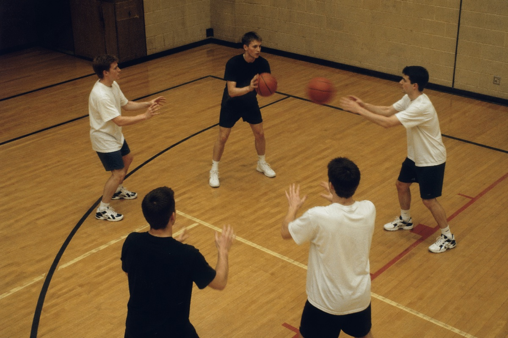
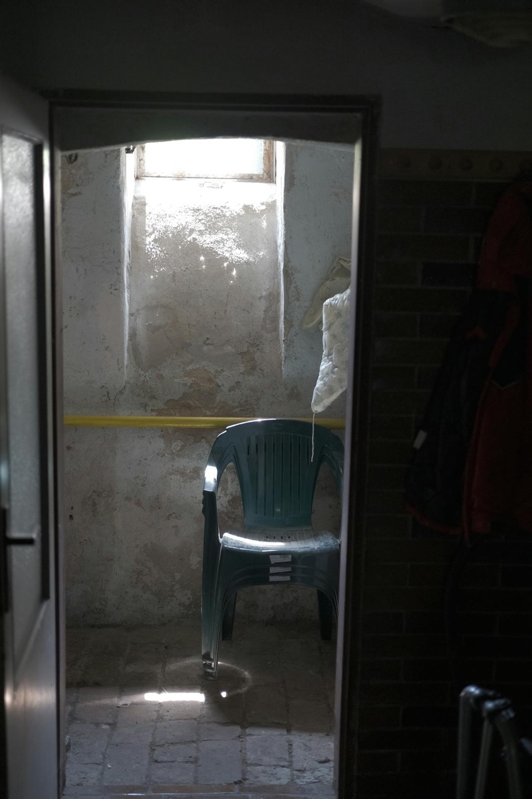

知覚・錯覚
視覚は私たちを裏切らない——そう信じている。だが網膜に届いた光のうち、意識に上るのはごく一部にすぎない。注意が通さなかったものは、目の前で起きていても、体験にならない。「見ていた」という確信の解像度は、思っているよりずっと粗い。
レンシンク・オレーガン・クラーク「To See or Not to See」がPsychological Science誌に発表。チェンジ・ブラインドネスが定量的に研究可能な現象として確立した。
同年、IBMのディープ・ブルーがカスパロフを破り、ドリーが公表された前年。人間の知覚と機械の判断の境界が、別々の方向から問われ始めていた。
2年後にサイモンズらの「ゴリラ動画」が続き、25年後のナートカー2024ナートカー他 2024（eLife）
ジョンズ・ホプキンス大学のマカエラ・ナートカーらが、約25,000人を対象にした5研究で、「気づかなかった」と報告した参加者の57%が対象の色・形・位置を偶然以上の精度で当てられると示した。「気づき」と「視覚情報の到達」が別の出来事である可能性を大規模に裏付けた研究。では「見えなかった」人にも残余の感受性があると判明。「気づく」の定義そのものが、いま書き換えの途中にある。
駅のホームで電車を待ちながら、スマホでメッセージを書き終え、顔を上げる。誰かが「すみません」と声をかけてきた。とっさに笑顔で応じる——が、相手の顔を見た瞬間に戸惑う。さっきまで隣にいた人ではない。いつ入れ替わったのだろう。
私たちは「目で見たもの」を律儀に記録していると信じている。スマホに視線を落とす数秒のあいだ、世界がぴたりと止まっていてくれると思っている。だが脳の中では、視野は粗いスケッチのまま放置されている。注意が向いていないものは、たとえ目に映っていても、ほとんど記録されない。
目の前で大きな何かが変わっても、人は気づかない。
注意を一点に集中したとき、視野の中で何が抜け落ちるのか。自分の知覚を実験台にして、注意と意識の境界線を歩く記事。
1997年、ブリティッシュコロンビア大学の心理学者ロナルド・レンシンクRonald A. Rensink
ブリティッシュコロンビア大学心理学教授。「フリッカー法」「マッドスプラッシュ法」など、変化の見落としを定量的に測る実験パラダイムを確立した中心人物。、ケヴィン・オリーガン、ジェームズ・クラークは、気味の悪いほど単純な実験を報告した。ほとんど同じ 2 枚の風景写真を、あいだに一瞬の灰色画面を挟んで交互に表示する——それだけだ。2 枚の間では画像の大きな部分、たとえば飛行機のジェットエンジンが消え、建物の色が変わり、手すりが出現していた。なのに、多くの参加者は 10 秒、20 秒、ときに 1 分以上探しても、変化の場所を特定できなかった。
論文のタイトルは直截だ。"To See or Not to See: The Need for Attention to Perceive Changes in Scenes"（見るということ、あるいは見ないということ——シーンの変化を知覚するには、注意が必要なのだ）。この現象に彼らが与えた名前が チェンジ・ブラインドネスチェンジ・ブラインドネス（Change Blindness）
シーンの前後で何か大きな変化が起きているのに、マスクや遮蔽、瞬き、サッカード（視線移動）などで変化の手がかりが途切れると、その変化に気づかなくなる現象。Rensink et al. 1997が定量的研究の出発点となった。、日本語で「変化の見落とし」である。
2 年後の 1999 年、ハーバード大学のダニエル・サイモンズDaniel J. Simons（1969–）
イリノイ大学アーバナ・シャンペーン校教授。視覚的注意・記憶・知覚の研究で著名。Christopher Chabrisとの共著『The Invisible Gorilla』（2010）で広く知られる。とクリストファー・シャブリChristopher F. Chabris（1966–）
ジオシンガー・ヘルス・システム上席研究員、ユニオン大学教授。チェスや集合的知性の研究も手がける。Simonsと共著で2004年にイグ・ノーベル賞（心理学）を受賞。は、同じ問題を別の角度から突く動画を公開する。3人ずつ白いシャツと黒いシャツを着た学生が、それぞれのチームでバスケットボールをパスし合う 75 秒の映像。観客への指示は「白チームのパス回数を数えてください」——それだけ。動画が終わってから研究者は尋ねる。「動画の途中で、何か変わったものに気づきましたか？」
気づいたのは半分しかいなかった。残りの半分は首をかしげた。映像の中では約 9 秒間、ゴリラの着ぐるみを着た人物が画面の中央を悠々と横切り、立ち止まって胸を叩き、退場していた。画面のど真ん中を、9 秒間も。サイモンズらはこの現象を非注意性盲目非注意性盲目（Inattentional Blindness）
注意が他に向いているとき、予期せぬ刺激の存在に気づかない現象。Mack & Rock（1998）が体系化し、Simons & Chabris（1999）が動的事象で実証した。変化の見落としとは発生条件が違うが、「注意の外は意識に届かない」という結論は共通する。と呼んだ。
フリッカーは視覚情報そのものを遮断して変化を隠す。ゴリラは注意を別の課題に縛りつけて変化を隠す。手口は違うが、導かれる結論は同じだ——視野に入ることと、意識に届くことは、別の出来事である。
ロナルド・A・レンシンク
Ronald A. Rensink
ブリティッシュコロンビア大学コンピューターサイエンス・心理学 joint 教授。MITで博士号取得後、ケンブリッジ大学、Cambridge Basic Research等を経て現職。1997年に O'Regan、Clark と共同で発表した「To See or Not to See」が、チェンジ・ブラインドネスを定量的に研究可能な現象にした決定的論文。以後、フリッカー法・マッドスプラッシュ法などの実験パラダイムを次々と開発し、視覚的注意と意識の境界を探り続けている。
レンシンクが「注意なしには何も見えない」ことを実験室のなかで定量化したのに対し、その 2 年後、同じ主張を体育館のコートで——しかも素人の目にも一撃でわかる形で——突き返した二人がいる。
ダニエル・J・サイモンズ
Daniel J. Simons（1969–）
イリノイ大学アーバナ・シャンペーン校心理学科教授。コーネル大学で博士号を取得後、ハーバード大学で教鞭をとっていた1999年、シャブリと共同でゴリラ動画を制作。視覚的注意、変化検出、記憶の歪みなど、知覚の限界を扱う研究を一貫して続けている。2004年イグ・ノーベル賞（心理学）受賞。著書『The Invisible Gorilla』（邦訳『錯覚の科学』）はベストセラーに。
この動画は一人では成立していない。サイモンズが視覚的注意の側から問いを設計し、もう一人が実験の半分と、のちの執筆の半分を担った。
クリストファー・F・シャブリ
Christopher F. Chabris（1966–）
ジオシンガー・ヘルス・システム上席研究員、ユニオン大学教授。ハーバード大学博士。チェスのマスターでもあり、専門知識・集合的知性・遺伝行動学にも研究領域を広げている。サイモンズとの共著『The Invisible Gorilla』では、注意の限界、記憶の脆さ、自信過剰、因果認知など6つの「日常の錯覚」を一般読者向けに体系化した。
"We are aware of only a small portion of what our eyes see, and we miss far more than we can imagine."
私たちは、目が見ているもののうちごく一部しか意識していない。想像をはるかに超える量を、私たちは見落としている。
— Christopher Chabris & Daniel Simons, The Invisible Gorilla（2010）
この実験には先駆者がいた。1970年代、心理学者ウルリック・ナイサーが、半透明に重ね合わせたバスケットボールの動画で「視覚的選択」を実演している。その2年前の1997年にはロナルド・レンシンクRonald A. Rensink
ブリティッシュコロンビア大学心理学教授。「フリッカー法」「マッドスプラッシュ法」など、変化の見落としを定量的に測る実験パラダイムを確立した中心人物。らがフリッカー法によって変化の見落とし（change blindness）を定量的に測定する枠組みを確立していた。サイモンズとシャブリの動画は、これらの系譜の上に「素人にも一目でわかる衝撃」を与えた点で決定的だった。
日常では両方が混ざって起きる。本記事のタイトルは前者だが、ゴリラ動画は厳密には後者の古典である。
✗ よくある誤解
「気づかなかった」のは、ぼーっと見ていたからだ
✓ 実際は
逆である。真剣にパスを数えた人ほど気づき率が下がる。注意を強く集中するほど、その外側は見えなくなる
✗ よくある誤解
専門家や訓練された目には起こらない
✓ 実際は
2013年、放射線科医24人にCT画像で結節を探させたところ、画像に挿入されたゴリラを83%が見落とした。視線追跡では多くがゴリラを直視していた
✗ よくある誤解
気づかない＝見えていない
✓ 実際は
2024年のジョンズ・ホプキンス大の研究では、「気づかなかった」と答えた人が形や色を偶然以上に当てられた。「見えていた」けれど「報告できなかった」可能性がある

1999年、サイモンズとシャブリはこの課題を被験者192名に与えた。「白シャツチームのパス回数を数えてください」と——ただそれだけ。
サイモンズとシャブリのゴリラ動画は、一度知ってしまうと二度と同じ体験はできない。本記事ではネタバレを避けるため動画を埋め込まず、未見の人向けに 公式動画（YouTube） のリンクだけ置いておく。先にそれを観てきてほしい。ここでは、ゴリラ動画より2年早くチェンジ・ブラインドネスを世界に突きつけたレンシンクのフリッカー課題を再現する。
ルールは単純だ。2枚の画像が灰色の幕を挟んで交互に表示される。2枚のどこかが1か所だけ違う。違いを見つけたら、そこをクリック（タップ）する。それだけ。全5ラウンド。
2枚の写真が灰色の幕を挟んで高速に切り替わる。違いを見つけたら、その場所をクリックしてください。全5ラウンド。
灰色の幕がなければ、どの変化も一目でわかる。それなのに、幕が入った途端に見つからなくなる。これがフリッカー課題フリッカー法 / フリッカー課題（Flicker Paradigm）
Rensink et al. 1997が確立した変化検出の実験パラダイム。オリジナル画像と変更版を、短い灰色のマスク画面を挟んで交互に表示し続ける。マスクが局所的な「動き」の手がかりを遮断するため、注意を向けて走査しないと変化に気づけない。大きな変化でも検出に数十秒かかることが定量的に示された。の核心であり、1997年にレンシンクが示したことだ。目の前の変化が消えるのではない。変化を捉えるために必要な「差分信号」が、幕によって奪われる。
2年後の1999年、サイモンズとシャブリは同じ問題を別の角度から突いた。バスケットボールのパスを数える課題に集中した被験者の約半数が、画面の真ん中を横切るゴリラに気づかなかった。条件によって40%から70%まで揺れるが、構造は同じだ。注意を一つに絞ると、それ以外が消える。
そして2024年、ジョンズ・ホプキンス大学のマカエラ・ナートカーMakaela Nartker
ジョンズ・ホプキンス大学心理脳科学科の研究者。Chaz Firestoneらと共同で、非注意性盲目に関する大規模実験を主導している。らが、約25,000人を対象にした5つの研究で衝撃的な結果を発表した。「気づかなかった」と答えた人の57%が、その後で「見えたものの色」「形」を偶然以上の精度で当てられた。気づかなかったものが、それでも何らかの形で脳内には届いていた。古典の解釈は、いま書き換えられつつある。
気づき率は実験の文脈次第で大きく変わる。さらに、「気づき」と「視覚情報の到達」は別物かもしれない。
ここでナートカー他の結果を、あなた自身の脳で確かめてみよう。以下は同じ論理の縮小版だ。3試行を通して、指示された課題に集中してほしい。試行が終わるたびに、指示されていなかった場所にあったものについて、不意打ちで聞く。「見ていない」「わからない」という選択肢はない。3択のどれかに必ず答えてもらう。偶然当てられる確率は33%。あなたの正答率がそれを超えるかどうかが、この課題の問いだ。
指示された課題に集中してください。各試行のあと、指示されていなかった項目について不意打ちで3択を聞きます。「わからない」でも当てずっぽうで答えてください。
結果は、あなたのメイン課題の正答率（当然、高い）と、「見ていないはずの項目」の正答率の対比で出る。偶然水準33%を上回れば——あなたの視覚野は、あなたが見ていないと感じたものを、それでも処理していた可能性がある。「気づき」と「処理」のあいだには、私たちが思うよりずっと広い空白がある。
人間の視覚野には、毎秒およそ10メガビットに相当する情報が網膜から流れ込んでくる。だが、意識に上るのはそのほんの一部だ。視覚野は限られた処理資源で大きすぎる入力を捌いており、何を意識まで届けるかは「注意」というシステムが決めている。
視覚処理は均一ではない。注意の当たった狭い領域だけが鮮明に「見られ」、他は粗くフィルターされる。
パス数を数えるという課題は、この狭いスポットライトを白い円の動きに固定し続けることを要求する。脳は処理資源の大部分をその追跡に投入する。結果として、視野の中央であっても、白チームと無関係な動き——たとえば黒いゴリラ——には処理がほとんど割かれない。網膜には映っているが、意識の手前で篩い落とされる。
注意が世界を選ぶ3つの段階
「白いシャツのチームのパスを数える」という指示が与えられた瞬間、視覚系は 白いオブジェクトを優先的に拾う ようにチューニングされる。これは1958年、英国の心理学者ドナルド・ブロードベントが提唱した 注意のフィルター理論 の現代版だ。
結果として、黒いシャツの選手たちの動きは「無視すべき情報」としてフィルター段階で減衰する。同じ 黒 という属性をもつゴリラが横切ったとき、それも自動的に減衰の対象になる——というのが、サイモンズらが示唆した一つの説明だ。実際、白いゴリラだったら気づき率はもっと高かった可能性がある。
注意が向いていない領域でも、初期視覚野では一定の処理が走る。色や輪郭くらいは抽出される。だが、その先の 「これは何か」「なぜここにあるか」 の判断にはほとんど資源が回らず、短期記憶にも長期記憶にも残らない。だから後から「ゴリラがいたか？」と聞かれても、思い出せる「跡」がない。
2024年のナートカーらの研究は、ここに新しい層を加えた。「気づかなかった」と答えた人でも、二者択一で色や形を尋ねると 偶然より高い精度 で答えられた。視覚情報は届いていたが、それを「見た」と 言語的に報告する閾値 を超えなかった、という解釈だ。
多くの参加者は、ゴリラの存在を知らされた後で動画を再生すると、衝撃を受ける。「これだけ堂々と歩いていたのに、なぜ気づかなかったのか」。だが衝撃の本当の対象は、ゴリラを見落とした事実ではなく、「自分は世界を全部見ている」という自己像が崩れた ことだ。
視覚は 網膜のスナップショット ではなく、注意と予測と記憶が混ざった 能動的な構築物 である。普段、私たちは構築の継ぎ目を意識せずにすんでいる。だから「見ている」と感じる。ゴリラ動画は、その継ぎ目を一瞬だけ見せてくれる装置なのだ。
注意は世界を選ぶ。選ばれなかったものは、視野の中にあっても意識には届かない——あるいは、届いていても報告できない。そして私たちは、その選択が起きていること自体に気づかない。
サイモンズ＆シャブリの本筋 関連する研究
1958
ブロードベントの注意フィルター理論
ドナルド・ブロードベントが「Perception and Communication」を発表。注意は「無関係な情報を初期段階でフィルターする装置」だと位置づけた。後の選択的注意研究の出発点。
1975
ナイサーの「選択的見ること」
ウルリック・ナイサーが、半透明に重ねたバスケ動画と握手動画で「見ようとしないものは見えない」ことを実演。これがゴリラ動画の直接の祖先となる。
1997
レンシンク「To See or Not to See」
ロナルド・レンシンク、J・ケヴィン・オリーガン、ジェームズ・クラークが Psychological Science に発表。2枚の画像のあいだに灰色画面を一瞬挟むだけで大きな変化が見えなくなることを実証。「変化の見落とし（change blindness）」が定量的に研究可能な現象になった。
1998
サイモンズ＆レヴィン「ドア実験」
道で会話中の研究者が、運搬中のドアに視界を遮られた隙に別人とすり替わる。15人中8人がすり替わりに気づかなかった。実験室の外でも変化の見落としが起きることを示した。
1999
サイモンズ＆シャブリ「Gorillas in our midst」
Perception誌に発表。バスケのパスを数える参加者192名のうち、約46%が画面を9秒間横切るゴリラに気づかなかった。古典中の古典となる。
2004
イグ・ノーベル賞（心理学）受賞
「人々を笑わせ、その後で考えさせる」研究としてイグ・ノーベル賞を受賞。授賞式でもゴリラ動画が上映された。
2010
著書『The Invisible Gorilla』
サイモンズとシャブリの共著（邦訳『錯覚の科学』）が刊行。注意・記憶・知識・自信・原因・潜在能力という「6つの日常の錯覚」を一般向けに体系化。世界的なベストセラーに。
2013
放射線科医のゴリラ
トラフトン・ドリュー、メリッサ・ヴォー、ジェレミー・ウルフが、CT画像にマッチ箱大のゴリラを埋め込み、放射線科医24名のうち83%が見落とすことを示した。専門知識は非注意性盲目を防がない。
2023
NYU「速度を変えると気づき率が変わる」
クレイナーとヴーアらが1500人超で速度を変えて再検証。原実験より大幅に速いゴリラは気づきやすくなった。「物理的な目立ちやすさ」と「意味的な予期」の役割を切り分けた。
2024
ナートカーらの残余感受性研究
ジョンズ・ホプキンス大が約25,000人で5研究を実施。「気づかなかった」人の57%が、その後で形・色を偶然以上に答えられた。「注意がなくても視覚は届いている」可能性を示し、現在も論争の中心にある。
フリッカー課題と残余感受性のクイズが突きつけるのは、視覚の不正確さではない。もっと根本的なことだ——網膜に光が届いても、そこにクオリアクオリア（qualia）
主観的な経験の質感。「赤を見たときに感じる、あの赤さそのもの」「痛みが痛いと感じられる、その感触」。物理的な記述だけでは言い尽くせない、一人称的な体験の内容を指す哲学用語。が生まれるとは限らない。色が赤く感じられる、形が三角に見える、そうした主観的な「何かに見える」という感触は、注意が通過したものにだけ立ち上がる。通らなかったものは、目の前にあっても、体験されない。
哲学者ネッド・ブロックNed Block
ニューヨーク大学の哲学者。意識を二層に分けた——報告や思考に使える「アクセス意識」と、主観的な感触そのものの「現象意識（フェノメナル意識）」。両者は一致するとは限らないと主張した。は、意識を二つに分けた。アクセス意識——報告したり思考に使ったりできる意識。現象意識——赤が赤く感じられる、あの主観的な感触そのもの。普通この二つは重なっていると思われているが、チェンジ・ブラインドネスや残余感受性は、そこに隙間があることを示唆する。処理はされている。だが現象意識には立ち上がっていない。あるいは立ち上がっていたが、アクセス意識には届いていない。
この裂け目は、この媒体が何度も扱ってきたテーマと地続きだ。「色は存在しない」は、物理世界にない色が脳の中で生まれる話だった。「マリーの部屋」は、物理情報とクオリアの関係を問う話だった。本記事はその裏面——クオリアが生まれない瞬間の話だ。見開かれた眼球の前を、色と形が揺らぎ、しかし何一つクオリアにならずに流れ去っていく。意識の枠内にいる私たちからは、その不在は原理的に見えない。
"You can look directly at something and not see it."
何かを直視していても、それを見ていないことはある。
— Trafton Drew on the radiologist gorilla study, National Geographic（2013）
実用的な含意もある。注意の容量は意志力では広げられない。だから対策は「もっと注意深く見る」ではなく、注意の偏りを前提にして環境を設計する 方向にある。チェックリスト、複数人の独立確認、視線追跡による死角の可視化。航空業界が何十年もかけて積み上げてきた事故対策は、この前提のうえに立っている。
ただそれ以上に、この研究群が残したのは一つの居心地悪い事実である。私たちは、自分が何を見て、何を見ていないかすら、信頼できる目撃者ではない。見えているという確信そのものが、意識の編集済みバージョンだ。クオリアは世界の側にあるのではない。注意を通過したものにだけ、遅れて立ち上がる。残りは、沈黙のまま私たちの脳を横切っていく。

見逃したものは、見逃したまま通り過ぎる。気づかなかったという事実さえ、多くの場合は気づかれない。
サイモンズ＆シャブリ『The Invisible Gorilla』（2010、邦訳『錯覚の科学』）
ゴリラ実験を起点に、注意・記憶・知識・自信・原因・潜在能力という6つの日常の錯覚を解説した一般書。NYTベストセラー。サイモンズは目撃証言の信頼性、医療ミス、運転事故、警察の見落としなどに議論を広げ、「見ているつもり」の代償を多面的に論じた。
ダニエル・カーネマン『ファスト＆スロー』（2011）
ノーベル経済学賞受賞者カーネマンは、ゴリラ実験を「私たちが自分の盲点に対して盲目である」例として冒頭近くで引用。直感的判断（システム1）の自動性と、それが取りこぼすものの両方を象徴する事例として広く知られるきっかけになった。
マルコム・グラッドウェル『Talking to Strangers』（2019）
グラッドウェルはこの本で、ボストン警察官ケニー・コンリーが暴行事件の現場を走り抜けながら同僚警官の暴行を「見なかった」と証言した1995年の事件を、ゴリラ実験の延長線上で再解釈。非注意性盲目が法廷でどう扱われるべきかを問うた。
To See or Not to See: The Need for Attention to Perceive Changes in Scenes
フリッカー法の原典。2枚の画像を灰色幕で交互に表示し、大きな変化でも検出に数十秒かかることを定量的に示した。チェンジ・ブラインドネス研究の出発点であり、本記事の体験コンテンツの直接の元ネタ。
Gorillas in Our Midst: Sustained Inattentional Blindness for Dynamic Events
原典そのもの。192人の参加者で4条件を比較し、半透明・不透明、難易度・対象チームの服の色を変えた厳密な設計が記述されている。著者のPDF版が無料で読める。
selective attention test — YouTube
サイモンズとシャブリの実験で使われた「ゴリラ動画」の公式アップロード。記事を読む前に一度だけ観ることを勧める。一度知ると二度と体験できない、文字どおり一期一会の映像。
Failure to Detect Changes to People During a Real-World Interaction
「ドア実験」の原典。実験室を出て路上で行われた変化の見落とし研究。ゴリラ動画の前史にあたる重要論文で、社会的カテゴリーが検出に影響する点も興味深い。
The Invisible Gorilla Strikes Again: Sustained Inattentional Blindness in Expert Observers
放射線科医24人にCT画像にゴリラを埋め込んで結節を探させ、83%が見落としたことを示した実験。視線追跡データも含み、「直視していても気づかない」ことが明確に可視化されている。
The Visible Gorilla: Unexpected Fast—Not Physically Salient—Objects Are Noticeable
原実験より速いゴリラは気づきやすくなることを1500人規模で示した再検証研究。「目立つ」とは何かを物理的特徴と意味的予期に分けて考える視点を提供する。
Sensitivity to Visual Features in Inattentional Blindness
約25,000人を対象とした5研究で、「気づかなかった」と報告した参加者でも色・形・位置を偶然以上の精度で答えられることを示した。「気づき＝注意」という古典的等式に再検討を迫る最新の議論。
The Invisible Gorilla: How Our Intuitions Deceive Us
著者本人による一般向け解説書。注意の錯覚から始まり、記憶・知識・自信・因果・潜在能力という6つの「日常の錯覚」を扱う。実験の背景と社会的応用を一冊で押さえられる。
Change Blindness: Past, Present, and Future
変化の見落とし研究の到達点と未解決問題を整理した総説。本記事で扱った change blindness と inattentional blindness の概念整理を、原典の言葉で確認したい人に。